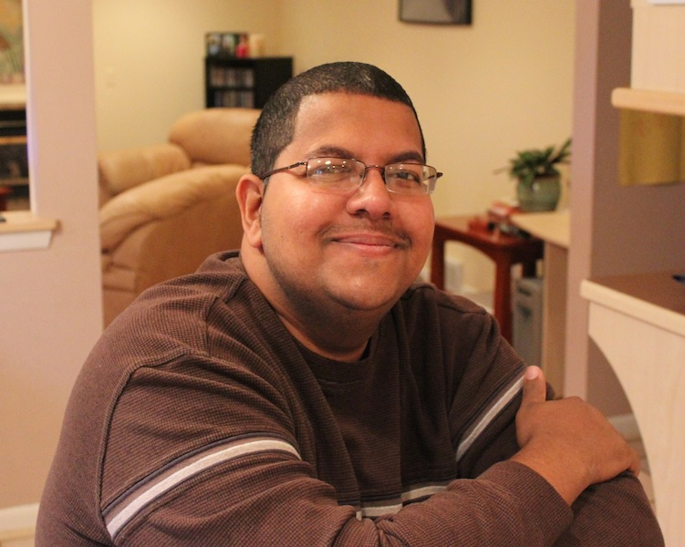
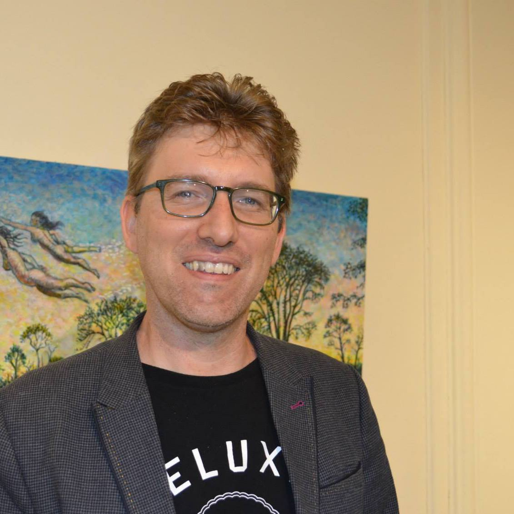
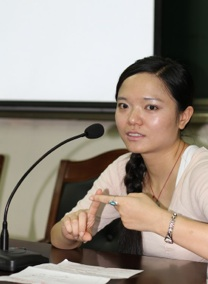

The National Science Foundation
Rochester Institute of Technology
The National Science Foundation
Rochester Institute of Technology
| PI | |
|---|---|
Cecilia Ovesdotter AlmAssistant Professor |
|
| Co-PI | |
|  |
Reynold BaileyAssociate Professor |
| Senior Personnel | |
Sandy BaldwinAssociate Professor |
|
Joe GeigelProfessor |
|
Anne HaakeProfessor and Interim Dean |
|
Trent HergenraderAssistant Professor |
|
|  |
Chris HomanAssociate Professor |

|
Emily Prud’hommeauxAssistant Professor |
Ray PtuchaAssistant Professor |
|
|  |
Linwei WangAssociate Professor |
Qi YuAssociate Professor |
|